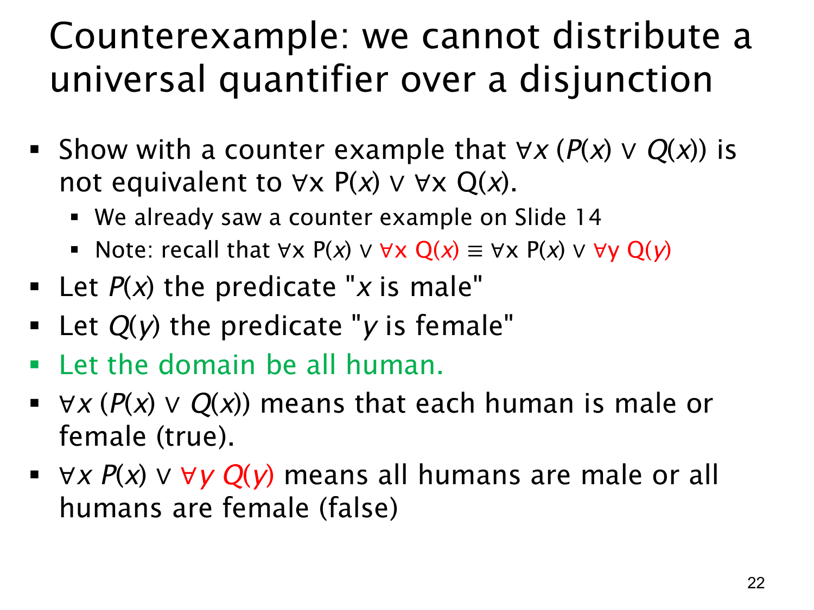

查看这一页课件

反例：全称量词不能跨“或”随意拆分
本页要否定下面的普遍等价：
∀x(P(x)∨Q(x))≡?(∀xP(x))∨(∀xQ(x)).
要证明两个式子不逻辑等价，只需构造一个共同论域与一组谓词解释，让左右两式真值不同。沿用第 14 页的结构，取论域 {a,b}，让 P(a) 真、Q(a) 假，而 P(b) 假、Q(b) 真。每个对象都至少满足一项，所以左式真；但不是所有对象都满足 P，也不是所有对象都满足 Q，所以右式假。这已经是严格的逻辑反例。
原页另用“男性”与“女性”作直观类比：它把 P(x) 写作“x 是男性”、Q(x) 写作“x 是女性”，意图说明“每个人在两个类别中至少属于一个”和“所有人统一属于某一个类别”是不同陈述。作为真实世界关于所有人的断言，前一个分类前提并不应直接当作普遍事实；这个例子只有在题目明确限定了一个恰好由这两类覆盖、且两类都有人出现的模型时，才可按课件所列的真假运行。上面的两元素抽象模型不依赖这项现实前提，已足够证明不等价。
页中还把右式的第二个绑定变量从 x 改为 y：
(∀xP(x))∨(∀xQ(x))≡(∀xP(x))∨(∀yQ(y)).
两处量词作用域互不重叠，改名不改变含义。真正造成真值差别的是“或”位于全称量词内部还是位于两个全称命题之间，不是变量字母不同。
查看本页勘误
L1.2 第 22 页：现实分类例子的前提
课件用“所有人均为男性或女性”作为 ∀x(P(x)∨Q(x)) 为真的例子。这个现实断言不能不经限定地当作关于所有人的普遍事实，因此页上以“所有人”为论域的真假判断并非严谨的通用反例。
要证明所讨论的两个公式不逻辑等价，只需使用第 23 页的抽象二元素模型：论域 {a,b}，P(a) 与 Q(b) 真，Q(a) 与 P(b) 假。在该模型中，∀x(P(x)∨Q(x)) 真，但 (∀xP(x))∨(∀xQ(x)) 假。
本勘误保留课件原页及第 22 页讲解原文，只把例子的适用前提和严格反例另行说明。